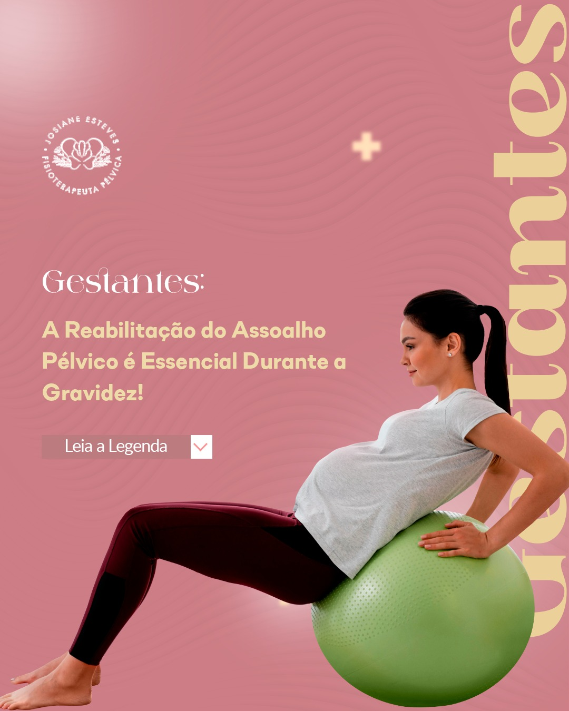

A fisioterapia obstétrica é uma especialidade da fisioterapia que se concentra no tratamento de mulheres durante a gravidez, trabalho de parto e pós-parto. O principal objetivo é promover a saúde e o bem-estar da gestante, auxiliando no alívio de dores e desconfortos típicos da gestação, preparando o corpo para o parto e facilitando a recuperação pós-parto. utilizamos técnicas como exercícios de fortalecimento e alongamento, massagem perineal, orientações posturais e respiratórias, entre outras, para garantir uma gestação saudável e um parto mais tranquilo. Além disso, a fisioterapia obstétrica também pode ajudar na prevenção e tratamento de condições comuns nesse período, como dor lombar, incontinência urinária e diástase abdominal. É importante sempre buscar acompanhamento de um fisioterapeuta especializado em obstetrícia para garantir uma gestação e parto seguros e saudáveis.